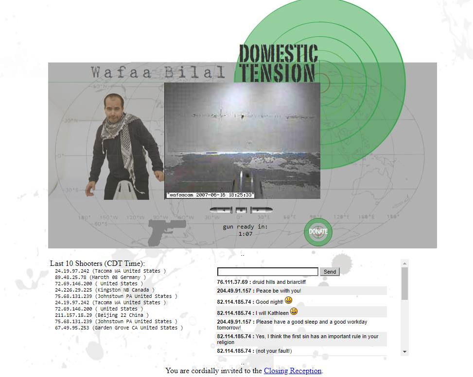

In 2007, Bilal conducted an interactive video installation dubbed Domestic Tension, where for 30 days, visitors of the project’s website would see a live view of the space, broadcasting 24/7. They were invited to interact with him via a live chat, and they could choose to remotely aim and fire a paintball gun at the artist. Due to the increase in its popularity the last final days, the installation was extended for an additional day.
Bilal aimed to highlight the racism, violence, and islamophobia of American culture after the 9/11 attacks, as well as raise awareness about the suffering Iraqis had to endure for years. Throughout the performance, Bilal struggled with his own trauma from his life experiences under Saddam Hussein's rule, during the Gulf War attacks, and enduring years of Sunni-Shia tension. He also had to endure the toxic, bigoted nature of many internet users, who spewed hateful rhetoric while being hidden by the veil of anonymity.
In a way, Bilal invites viewers to become active participants of violence (albeit non-lethal), opening the door to the notion of a cyber militia that can operate from anywhere that has an internet connection. He created a warzone where many acclaim the installation and the meaning behind it, while others scrutinize him and aim to do him harm. He gamified the violence and turned into a game with actual consequences and pain being inflicted.
 We've included an image linking to a reconstruction of the original website. Although the installation's period is long gone, one can still get a sense of what it was like to be part of the experience. There are even excerpts of the chat room, with real comments from users at the time.